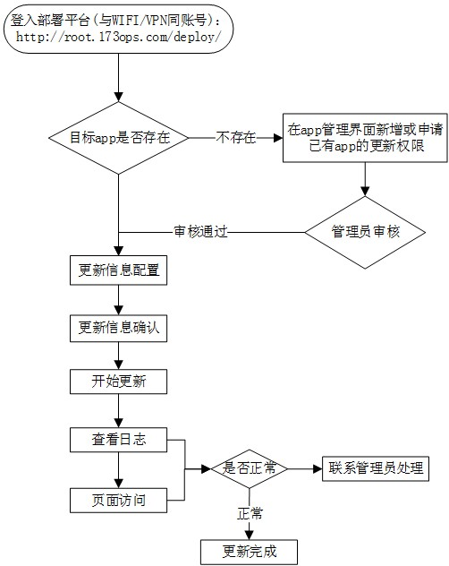
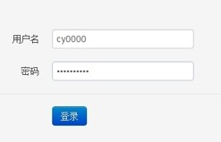
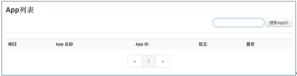
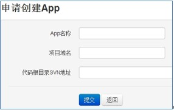
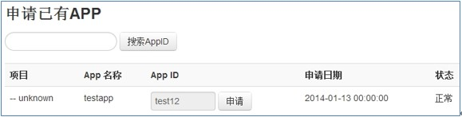
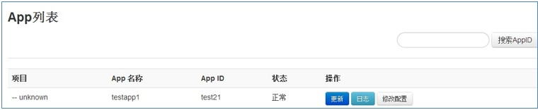
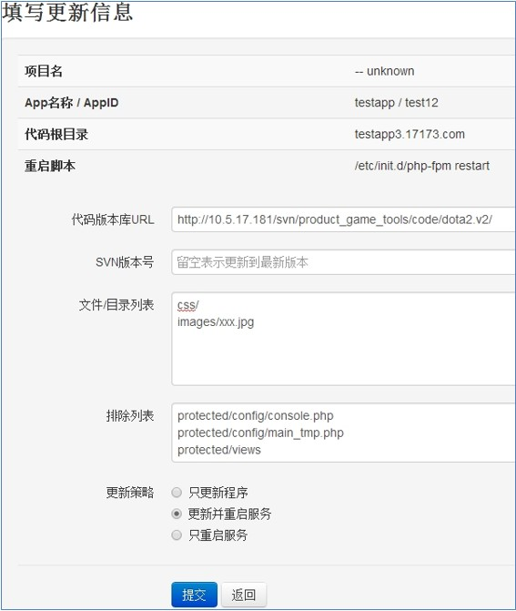
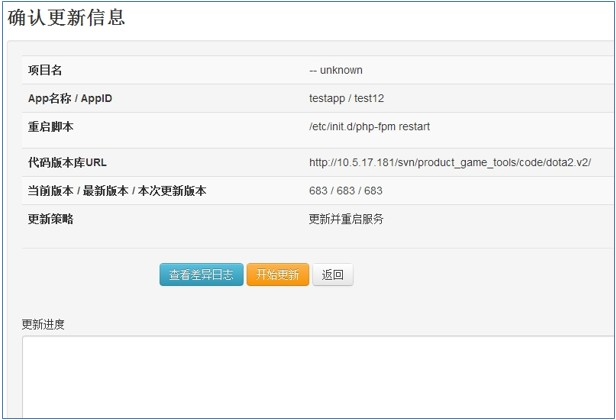
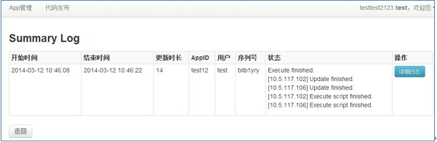

tag: code deploy system
1. 介绍
代码部署系统是为了提高代码部署效率，方便开发人员及时、有效的发布代码而开发的，主要功能有以下几点：
- 结合LDAP认证，能根据不同的开发人员，管理相对应的线上项目代码
- 根据需求更新指定的版本（需配合SVN实现）
- 通过用户自定义文件列表，实现对指定的文件或文件夹做更新
- 支持更新后调用脚本，完成服务重启等工作
- 更新日志实时显示，便于了解更新进度
目前仅支持Chrome浏览器，因为其中的javascript脚本不兼容ie和FireFox
1.1. 流程图

2. 操作步骤
2.1. 登录
http://root.173ops.com/deploy/
账号密码与登录WIFI/VPN的一致

2.2. 申请APP
第一次进入系统，会看到如下界面，不存在任何APP，需要申请：

点击左上角的"App管理"，根据需要选择"创建App"或者"申请已有app权限"
申请创建App，其中"App名称"和"项目域名"为必填项，如果不用做代码发布，SVN地址可以留空

申请已有App权限，需要知道对应的appid

申请完，可以在"App申请记录"分页看到状态，另外请通知系统管理员审核申请
注意事项：
- 项目域名部分必填，域名后不要带任何的location
- 比如要申请的app是针对pay.mobogenie.com/admin的，可以这样填：App名称: admin / 项目域名: pay.mobogenie.com
- 如果要用代码发布功能，SVN地址必须填写。目前支持两类地址：
2.3. 配置更新信息
申请通过后，可以在“代码发布”界面看到已有的app列表，其中"修改配置"按钮可用于修改SVN地址

点击"更新"出现配置页面

注意事项如下：
- 脚本会将"代码版本库URL"中填写的svn地址中的代码，更新到"代码根目录"的位置。由于用户无法更改"代码根目录"，所以如果只想更新svn地址中某个子目录或者某个具体文件，正确的做法是将相对路径填写到"文件/目录列表"，而不是修改"代码版本库URL"。比如图中的配置表示只更新SVN中css子目录和images/xxx.jpg这个文件
- "文件/目录列表" 和 "排除列表" 可以填多条记录，用换行隔开，注意填写的路径都是相对路径（相对于"代码根目录"的路径）
- 更新策略部分，如果需要选择重启服务，必须能在表格中看到"重启脚本"这一行，否则请联系系统管理员配置重启命令。没有"重启脚本"这一行，即使选择了重启服务也是无效的。
- 代码发布系统不会对从svn检出的文件做任何修改，所以代码中的配置信息（比如数据库连接串等）请修改好后发布SVN
2.4. 开始更新
上一步配置无误后点击"提交"，出现"确认更新信息"界面，确认后点击"开始更新"，更新进度栏会显示实时日志
- 如果长时间无日志显示，或者日志长时间处于停滞状态不刷新，请联系系统管理员
- 点击"开始更新"之前，可以点击"查看差异日志"按钮查看svn日志

更新脚本执行完成后，会自动跳转到日志页面。如果这里看不到任何日志条目，请使用Chrome浏览器

状态栏显示了更新的汇总结果，如果有任何"error"字样，请联系系统管理员查看
"详细日志"按钮可以查看到本次更新的具体日志，如果其中有发现ERROR或者CRITICAL级别的日志，请联系系统管理员查看
3. 文档历史